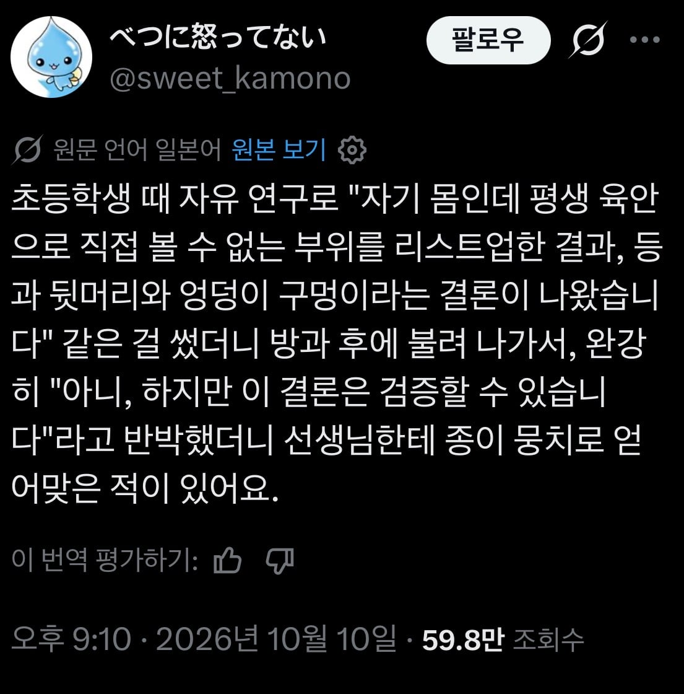

초등학생때 숙제하다가 혼난 일본인 ㄷㄷ
댓글
대가리 떼는거 아니면 직접 볼수없지
코
코 높거나 크면 좀 보이긴해
그건 좀 신기하네ㅋㅋ
아무리 낮아도 보여...
보인다기보다는 그냥 실루엣 ㅋㅋ '코가 있다'정도로만 ㅋㅋㅋㅋ
한쪽눈 감으면 보이지 않나? 콧구멍은 안보이겠지만
코는 원래 보이는건데 뇌가 시야에서 지우는거야
그 얘기있잖아 정신병원에갔는데 누가 코가 없어서 왜 없냐하니까 한번신경쓰이니까 거슬려서 잘라버렸다고
???: 난 볼수있어
자른후 3초 정도는 볼 수있다고 한다
상상력이 빈약하구나 검증 ㄱㄱ
직접이라는건 눈깔만으로 라는뜻
바닥에 거울놓고 쭈구려 앉으면 똥고 잘보임
육안으로 직접 볼수
거울이 육안이란말이가
지가 문제를 병신같이 낸 건데 애먼 애를 괴롭히냐 씨발새끼가
자유 연구
...낭고의 상 이란 것이 있단다